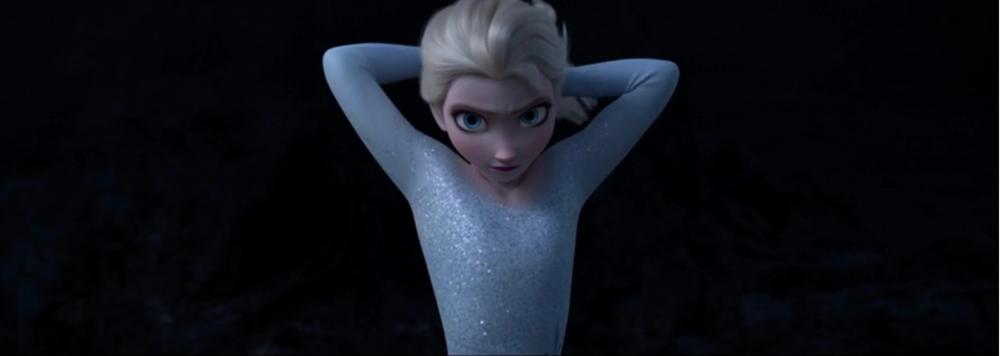
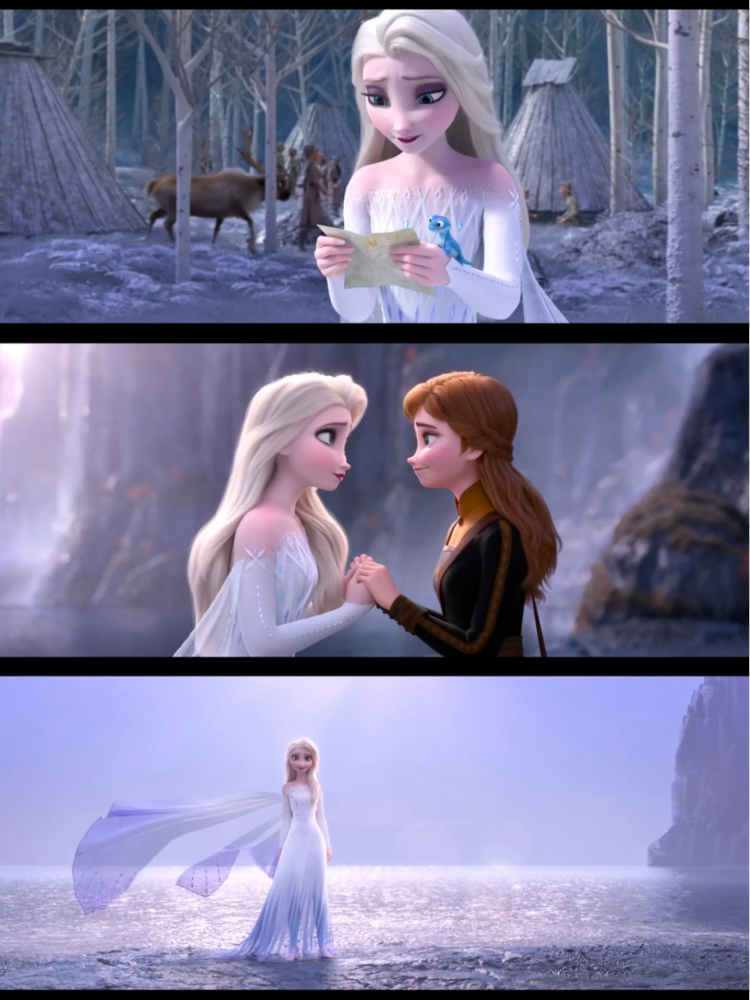

❄️ 人物档案
艾莎 · 阿伦黛尔的冰雪女王
她是冰雪的创造者，也是被恐惧囚禁的姐姐。从 conceal 到 reveal，她走过一条从自我否认到全然接纳的长路——而这条路，用了整整两部电影。
2013
首次登场
24
F2 时年龄
7
登场小说
3
标志曲目
如果用一张速览卡把她最重要的信息一次看清，再读她的一生，你会发现：艾莎从来不是反派，而是一个被恐惧困住太久的女孩。
📖 人物档案 · 她是谁
这是艾莎卷的「入口页」：先用一张速览卡把最重要的信息一次看清，再给一段总览式简介与生平速览。想深入哪一段，左侧导航都有对应的专门页面。

全名Elsa of Arendelle（阿伦黛尔的艾莎）
称号冰雪女王（Snow Queen）· 第五元素（The Fifth Spirit）
身份阿伦黛尔公主 → 女王 → 第五元素精灵
首次登场《冰雪奇缘》（2013）
配音（英）Idina Menzel；童年：Eva Bella（F1）、Mattea Conforti（F2）、Spencer Lacey Ganus（12 岁）
中文配音大陆：周帅／胡维纳（唱）；台湾：刘小芸；香港：穆宣名
家人妹妹安娜 · 母亲 Iduna · 父亲 Agnarr
居住地阿伦黛尔王宫 → 北山冰宫 → 魔法森林
能力冰雪魔法（造物·控雪·天气）· 沟通自然之灵 · 第五元素
状态在世（作为第五元素精灵长居魔法森林）
❄️ 一句话认识她
艾莎是阿伦黛尔的公主与女王，生来就拥有操控冰雪的魔法。她不是反派，也不是单纯的「冰雪女王」——她是一个因为一次童年意外，而被恐惧与「conceal, don't feel」的咒语困住多年的女孩；也是一位最终接纳自己、成为「第五元素」、连接人类与自然的传奇。她的故事，是关于「藏起自己」与「坦然做自己」之间，那条漫长而艰难的弧光。

📜 生平速览
童年：与安娜玩雪时魔法失控误伤妹妹，被父母要求藏起力量，开始自我隔离。
加冕：加冕典礼上秘密暴露、魔法失控，逃往北山，唱响《Let It Go》。

归来：因安娜的「真爱之举」破除诅咒，重登王座，不再隐藏。
女王：学会用魔法治国与助人，但夜里的召唤声越来越近。
真相：进入魔法森林，揭开父母身世，发现自己就是「第五元素」。
归位：化为自然之灵，长居魔法森林；安娜在阿伦黛尔加冕。姐妹各自为王，始终相连。



📖 设定集概念稿
以下是官方设定集中的艾莎概念设计稿——从早期素描到最终造型，记录了这个角色从纸面到银幕的诞生过程。


概念稿展示了动画师如何通过细微的表情变化传达艾莎的心理状态——紧绷的下颌、躲闪的眼神、松开手套时的迟疑。这些「不说出口」的表演，比台词更准地写出了她的恐惧与克制。
❄️ 一句话速览
艾莎 = 阿伦黛尔公主 → 女王 → 第五元素精灵；她的故事，是「藏起自己」与「坦然做自己」之间的漫长弧光。